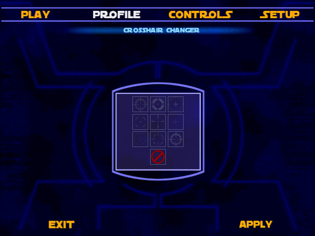

CROSSHAIR CHANGER
This mod lets you select crosshair from MP menu (profile). You can select 9 different crosshairs or disable crosshair.

You SHOULD mail me when You see some bugs or You have an idea...